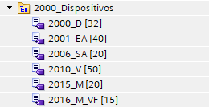

Constantes de dispositivos
Para el uso de dispositivos en el programa del PLC, se utilizarán constantes en vez de números indicando la posición del array del dispositivo. De esta forma, se puede realizar un seguimiento mediante referencias cruzadas más efectivo, así como ver de manera visual las variables de cada dispositivo.

Para ello, se creará una tabla de variables por cada tipo de dispositivo que se tenga en el programa.

En cada tabla de variables, se declarará el mismo número de constantes que tengamos de cada dispositivo.